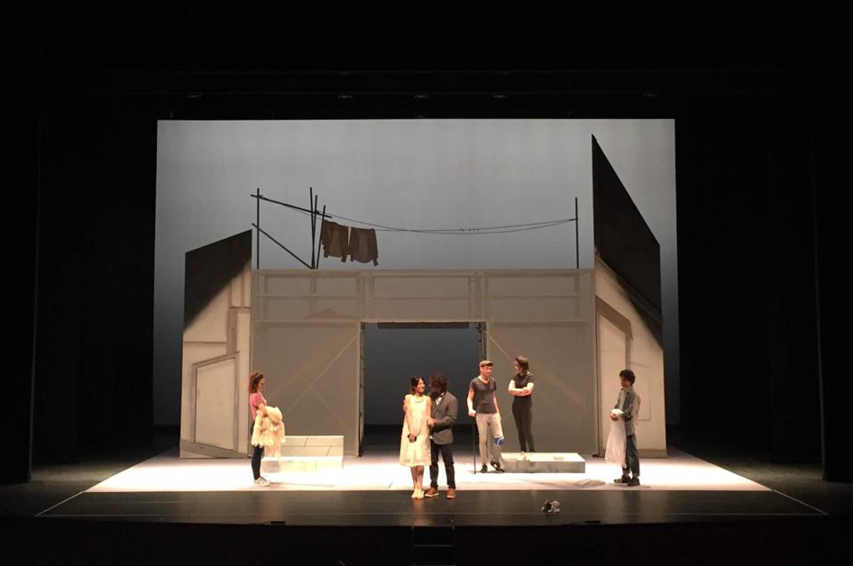

Fortunata y Benito (2020)
De Laila Ripoll. La Joven compañía. Estreno Teatros del Canal.

El coloquio de los perros (2020)
De Cervantes. Versión y dirección Emilio del Valle. Factoría Teatro e Inconstantes Teatro.
Donde el bosque se espesa (2018)
De Laila Ripoll y Mariano Llorente. Diseño y realización de escenografía. Teatro Español.


Nerón (2018)
De Eduardo Galán. Diseño y realización de escenografía. Teatro Romano de Mérida.


Señora de rojo sobre fondo gris (2018)
De Miguel Delibes. Diseño y realización de escenografía. Teatro Adolfo Marsillach.

Constanza: Dos historias de Cervantes (2017)
Dir. Gonzala Martín Scherman. Diseño y realización de escenografía. Factoría Teatro.

24 horas en la vida de una mujer (2016)
De Stefan Zweig. Diseño y realización de escenografía. Teatro La Abadía.


La judía de Toledo (2016)
De Lope de Vega. Diseño y realización de escenografía. Centro Nacional de Teatro Clásico.


Pánico (2016)
De Mika Myllyaho. de Stefan Zweig. Diseño y realización de escenografía. Teatro Colón, A Coruña.

El Triángulo Azul (2014)
De Laila Ripoll y Mariano Llorente. Diseño y realización de escenografía. Sala Valle Inclán. CDN.
La Venus de las pieles (2014)
De David Ives. Diseño de escenografía. Matadero Madrid.

Atra Bilis (2013)
De Laila Ripoll. Diseño y realización de escenografía. Producciones Micomicón.
La Discreta Enamorada (2013)
De Lope de Vega. Diseño y realización de escenografía. Factoría Teatro.

La Dama Boba (2012)
De Lope de Vega. Diseño y realización de escenografía. Producciones Micomicón.
La Isla (2012)
De Ana María Matute. Diseño y realización de escenografía. Factoría Teatro.
El Burlador de Sevilla (2012)
De Tirso de Molina. Diseño y realización de escenografía. Factoría Teatro.
Los niños perdidos (2006)
De Laila Ripoll. Diseño y realización de escenografía. Producciones Micomicón.